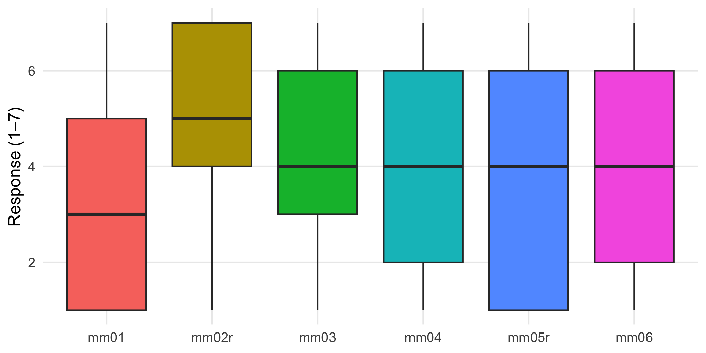

allbus |>
select(age) |>
mutate(birth_year = 2023 - age) |>
head(3)# A tibble: 3 × 2
age birth_year
<dbl+lbl> <dbl>
1 50 1973
2 51 1972
3 69 1954How do six individual items become a measurable attitude?
In Chapter 4 you imported the dataset, found variables and declared missing values. This chapter is about what quantitative social research calls operationalisation: an abstract idea (“Islamophobia”) becomes concrete variables that you can calculate with.
Research journal: Where are you in your mini study? You have the raw data. Now you build what will become your dependent variable. Building the scales is the central methodological step: it decides whether your models in the later chapters rest on something stable. At the end of this chapter you have islamophobia and populism as clean variables.
If you ask someone directly, “Are you Islamophobic?”, you will almost always get a no, even from people who say in election surveys that they vote for right-wing populist parties and who make clearly exclusionary statements in discussions. There are two reasons for this. First, nobody wants to describe themselves publicly as “Islamophobic”, because the term has negative connotations. Second, attitudes are not as clear-cut as a yes or a no. Someone can find some aspects of a religion problematic and others not, and is therefore a little sceptical of Islam without accepting the whole label.
Social research solves this problem with an old trick: instead of asking about the construct directly, it asks about several concrete statements that capture the construct indirectly. A survey therefore asks for agreement with statements such as:
“I think the practice of Islam in Germany should be restricted.”
and
“Islam fits into our society.”
and
“The presence of Muslims leads to conflicts.”
Together, six such items give a picture of how a person views the Muslim population in Germany. From the answers you calculate a single scale score that is more robust and more nuanced than any single answer.
This step from an abstract construct to a measurable variable is what quantitative social research calls operationalisation. It is the methodological core of every empirical study: you can only test a theory against data once you have translated it into measurable quantities.
This chapter takes you from the six raw items to the finished scale in five steps:
mutate()), for example derive a new quantity from two existing variables.case_when(), if_else()): define new categories (“anyone under 30 counts as young”).rec()), the central operation: change values, merge categories, reverse the direction of items (reverse coding).row_means()): one mean per respondent from several items.pomps()): put scales with different ranges on a common 0–100 basis.At the end of the chapter you have built and documented the two scales of the mini study: Islamophobia (islamophobia, 1–7) and populism (populism, 1–5). With these, you start the analysis in Chapter 7.
mutate().case_when(), recode_values() and if_else().summarise(.by = ...).rec() inside mutate(), from simple recoding through "dicho"/"quart" to reverse coding.to_dummy().std()) and centre (center()) variables.left_join(), for example individual data and context data.pivot_longer() and pivot_wider().row_means() and a controlled min_valid.pomps().A handful of functions from dplyr covers most data transformations:
| Function | Effect |
|---|---|
mutate() |
Create or change variables (SPSS: COMPUTE) |
case_when() / recode_values() |
Vectorised conditional logic (SPSS: IF) |
if_else() |
Short form for conditions with two outcomes |
summarise() |
Summaries per group (SPSS: AGGREGATE) |
group_by() |
Grouping for the operations that follow |
distinct() |
Unique values of a variable |
rename() |
Rename variables |
mutate() and across()mutate() is the R counterpart of COMPUTE in SPSS. You pass mutate() one or more assignments of the form “new column name = expression”, and dplyr adds the new column(s) to the tibble. Note that mutate() returns the whole tibble, so you need to assign the result (allbus <- allbus |> mutate(...)) if the new column is to be kept. Without an assignment, the change is printed once and then disappears.
allbus |>
select(age) |>
mutate(birth_year = 2023 - age) |>
head(3)# A tibble: 3 × 2
age birth_year
<dbl+lbl> <dbl>
1 50 1973
2 51 1972
3 69 1954mutate() computes the new column row by row: for the first respondent 2023 − 50 = 1973, for the second 2023 − 51 = 1972 (Figure 5.1). The new tower birth_year is a number without value labels (<dbl>).
mutate() computes the new tower birth_year from age, separately for each row. The first three rows are shown.
The chunk above has no allbus <-. R prints the result with birth_year, but allbus itself keeps its 579 columns (Figure 5.2). Only allbus <- allbus |> mutate(...) saves the new tower in allbus; the dataset then has 580 columns.
allbus stays at 579 columns. With allbus <-, the tower is saved in allbus.
Stop and think. You write allbus_new <- allbus |> mutate(birth_year = 2023 - age). How many columns do allbus and allbus_new have afterwards?
allbus_new <- allbus |> mutate(birth_year = 2023 - age)
ncol(allbus)[1] 579ncol(allbus_new)[1] 580R saves the result under the name to the left of the arrow. allbus_new has the new tower and therefore 580 columns; allbus stays at 579. This way you keep an intermediate result without overwriting the original.
To apply the same transformation to several variables, use across():
allbus |>
mutate(across(c(mm01, mm02, mm03), as.numeric))case_when(), if_else() and recode_values()case_when() is the R equivalent of IF in SPSS. You list conditions in the form condition ~ value; the first one that applies wins.
allbus |>
select(educ) |>
mutate(
education = case_when(
educ %in% 1:2 ~ "low",
educ == 3 ~ "medium",
educ %in% 4:5 ~ "high",
.default = NA
)
) |>
count(education)# A tibble: 4 × 2
education n
<chr> <int>
1 high 2472
2 low 982
3 medium 1639
4 <NA> 153Caution: Order matters. case_when() checks the conditions from top to bottom and takes the first one that applies; all later ones are ignored for that case. If you put a general condition before a specific one, the general one hides the specific one:
# WRONG: the first line catches everyone aged 18 and over, "senior" is never reached
case_when(
age >= 18 ~ "adult",
age >= 65 ~ "senior",
.default = "under 18"
)
# RIGHT: more specific first
case_when(
age >= 65 ~ "senior",
age >= 18 ~ "adult",
.default = "under 18"
)When a recoding gives strange results, check the order of the conditions first.
Figure 5.3 runs through both orders from the box with the first five respondents. In the wrong order, all five stop at the first condition, age >= 18, including the respondents aged 69 and 72. In the right order, case_when() checks age >= 65 first; only those who do not stop there move on to the next line.
age with both orders from the box. Each value stops at the first condition that applies to it.
For only two outcomes, if_else(condition, value_if_true, value_if_false) is shorter:
allbus |>
mutate(young = if_else(age < 30, "young", "30+")) |>
count(young)# A tibble: 3 × 2
young n
<chr> <int>
1 30+ 4529
2 young 694
3 <NA> 23If you only map individual values to new values (without comparison operators), recode_values() is shorter than case_when(), with the old value on the left and the new one on the right:
allbus |>
select(eastwest) |>
mutate(region = recode_values(eastwest, 1 ~ "West", 2 ~ "East")) |>
count(region)# A tibble: 2 × 2
region n
<chr> <int>
1 East 1679
2 West 3567recode_values() instead of case_match()
In older tutorials you will find case_match() for the same task. Since dplyr 1.2 it is deprecated and gives a warning; recode_values() is its successor and is written the same way. For recoding whole scales, mariposa’s rec() (next section) remains the more convenient tool.
group_by(), summarise() and n()allbus |>
group_by(eastwest) |>
summarise(
n_cases = n(),
n_distinct_educ = n_distinct(educ),
mean_age = mean(age, na.rm = TRUE)
)# A tibble: 2 × 4
eastwest n_cases n_distinct_educ mean_age
<dbl+lbl> <int> <int> <dbl>
1 1 [OLD FEDERAL STATES] 3567 8 51.7
2 2 [NEW FEDERAL STATES] 1679 8 54.3n() counts all cases in the group, n_distinct() counts the unique values of a variable.
summarise() turns each group into one row (Figure 5.4): the 3567 respondents in the West become one row with a mean age of 51.7 years, the 1679 in the East one row with 54.3 years.
eastwest, shown with the first three respondents from West and East. summarise() combines all rows of a group into one row with the mean.
.by
Since dplyr 1.1 you can also set the grouping directly in the call to summarise() or mutate(), without group_by() before it:
allbus |>
summarise(
mean_age = mean(age, na.rm = TRUE),
.by = eastwest
)# A tibble: 2 × 2
eastwest mean_age
<dbl+lbl> <dbl>
1 1 [OLD FEDERAL STATES] 51.7
2 2 [NEW FEDERAL STATES] 54.3This is shorter, and you cannot forget ungroup().
distinct() and rename()distinct() shows you all unique values of a variable. It is the quickest answer to “which codes are there?”:
allbus |>
distinct(eastwest)# A tibble: 2 × 1
eastwest
<dbl+lbl>
1 1 [OLD FEDERAL STATES]
2 2 [NEW FEDERAL STATES]rename() renames variables, with the new name on the left and the old name on the right:
allbus |>
rename(gender = sex, age_years = age) |>
select(gender, age_years) |>
head(3)# A tibble: 3 × 2
gender age_years
<dbl+lbl> <dbl+lbl>
1 1 [MALE] 50
2 1 [MALE] 51
3 2 [FEMALE] 69 Both are small tools that you will use often, especially when you turn cryptic ALLBUS names into meaningful short names for your analysis dataset.
rec()Imagine you have the school education of 5246 people in the variable educ. The values 1 to 5 stand for school-leaving certificates, from “no certificate” through the lowest level, the intermediary level and the qualification for a university of applied sciences up to the qualification for university; in addition there are 6 (“other school certificate”) and 7 (“still at school”). For a regression, you want coarser categories than these seven: low / medium / high. You recode the variable.
This is the most common data operation in social research, and one of the most error-prone. If you swap one value or forget one category, your whole analysis runs on the wrong scale. SPSS has the RECODE command with its own small syntax for this. mariposa’s rec() function does the same but is built for tidyverse workflows: you use it inside mutate(), it keeps labels, and it understands a compact rule syntax in which you express a whole recoding in a single string.
The syntax:
data |>
mutate(new = rec(old, rules = "1=1; 2:3=2; else=NA"))rec() takes the old variable and the rule and returns the recoded values. mutate() stores them under the name to the left of the =.
The rule syntax at a glance:
| Pattern | Effect | Example |
|---|---|---|
old=new |
Recode a single value | "1=10; 2=20" |
lo:hi=new |
Recode a range of values | "1:3=1" |
a,b=new |
Recode a list of values/ranges | "1,2=1; 3,4:5=2" |
min:x=new, x:max=new |
Dynamic limits | "min:5=1; 6:max=2" |
[Label] |
Assign an inline value label | "1:2=1 [low]; 3:5=2 [high]" |
else=copy |
Keep all values not mentioned unchanged | "1:3=1; else=copy" |
else=NA |
All values not mentioned become NA | "1=1; else=NA" |
NA=new |
Replace NA with a value | "NA=0; else=copy" |
val=NA |
Turn specific values into NA | "-9=NA; -8=NA; else=copy" |
"rev" |
Reverse a scale (hi + lo - x, limits from the value labels) |
rules = "rev" |
"rev(lo, hi)" |
Reverse a scale with explicitly given limits | rules = "rev(1, 5)" |
"dicho" |
Dichotomise at the median (0/1) | rules = "dicho" |
"dicho(x)" |
Dichotomise at a fixed cut point (≤ x → 0, > x → 1) | rules = "dicho(3)" |
"mean" |
Dichotomise at the mean | rules = "mean" |
"quart" |
Split into four quartile groups | rules = "quart" |
Rules are checked in order; the first matching rule wins. Valid values that no rule matches become NA; mariposa then warns you and names the values concerned. With else=copy you keep them; with else=NA you confirm explicitly that they are dropped. Missing values declared on import (the tagged NAs that set_na() created) keep their missing type when you recode, unless an NA= or else= rule covers them. else=NA therefore also turns NO ANSWER or CANNOT BE CODED into a plain NA, and the distinction between the missing types is gone. If you want to keep it, name the codes to drop explicitly (for example 6:7=NA) and leave out the else rule or write else=copy.
allbus |>
mutate(
educ = rec(educ, rules = "1:2=1 [low]; 3=2 [medium]; 4:5=3 [high]; else=NA",
as_factor = TRUE)
) |>
count(educ)# A tibble: 4 × 2
educ n
<fct> <int>
1 low 982
2 medium 1639
3 high 2472
4 <NA> 153With as_factor = TRUE, the recoded variable becomes a factor straight away; the […] notation in the rules assigns the value labels in the same step. The 153 NA consist of the 44 respondents with code 6 or 7 and the 109 missing values declared on import (DATA ERROR, CANNOT BE CODED, NO ANSWER). In the result, all 153 are plain NA.
Figure 5.5 breaks the rule down into its parts. Each part takes the codes it names: 1:2=1 [low] combines 1 and 2 into the level low, and else=NA takes everything else, including the missing values declared on import.
![At the top the code mutate( educ = rec(educ, rules = “1:2=1 [low]; 3=2 [medium]; 4:5=3 [high]; else=NA”, as_factor = TRUE) ). On the left the tower educ, dbl+lbl, with seven blue bricks and their stickers: 1 NO CERTIFICATE, 2 LOWEST LEVEL, 3 INTERMEDIARY LEVEL, 4 QUALI.UNIV.APPL.SCI., 5 QUALI.FOR UNIVERSITY, 6 OTHER SCHOOL CERTIF., 7 STILL AT SCHOOL, below them an empty dashed brick. Brackets group the bricks. Each group leads through one part of the rule and a green arrow to a brick of the factor educ, fct, with the number n next to it: 1 and 2 through 1:2=1 [low] to low, 982; 3 through 3=2 [medium] to medium, 1639; 4 and 5 through 4:5=3 [high] to high, 2472; 6, 7 and the empty brick through else=NA to an empty brick, 153.](Bilder/figuren/en/k05-rec.svg)
rec() in its parts. Each part turns one or more codes of educ into a level of the new factor.
Instead of writing a chain of rules, you can split a variable at the median, at a fixed cut point, at the mean or into quartiles in a single call:
allbus |>
mutate(age_d = rec(age, rules = "dicho(50)")) |>
count(age_d)# A tibble: 3 × 2
age_d n
<dbl+lbl> <int>
1 0 2281
2 1 2942
3 NA(j) [CANNOT BE GENERATED] 23Here age_d becomes 0 for everyone aged 50 or under and 1 for everyone over 50, so the cut point itself belongs to the lower group. The name age_d to the left of the = creates a new variable; the original age is kept.
In Figure 5.6 the cut lies between 51 and 50. The 23 respondents without a valid age (CANNOT BE GENERATED) also stay missing in age_d.
dicho(50) splits age into two groups. The first five values are shown, sorted by size; the 50 ends up in group 0.
allbus |>
mutate(age_q = rec(age, rules = "quart")) |>
count(age_q)# A tibble: 5 × 2
age_q n
<dbl+lbl> <int>
1 1 1322
2 2 1344
3 3 1259
4 4 1298
5 NA(j) [CANNOT BE GENERATED] 23age_q is now a categorical variable with the values 1–4 for the age quartiles.
What happens if you combine six items into a scale when four of them are worded in the same direction and two in the opposite direction? You get rubbish. The positively worded items pull the mean in one direction, the negative ones in the other, and in the end effects that should add up cancel each other out.
This is exactly the case with the Islamophobia scale of the mini study. The researchers deliberately worded the six items in mixed directions: four negatively (“restrict Islam”), two positively (“Islam fits into society”). It is a way of countering a classic survey bias called acquiescence: the tendency of some respondents to agree with statements across the board, whatever they are about. If all six items pointed in the same direction, this tendency would distort the result. Mixing the directions cancels it out.
For you, this means that before you combine the items into a scale, you need to reverse-code the two positively worded items, that is, recode them so that in the end all six point in the same direction.
| Item | Wording | Direction |
|---|---|---|
| mm01 | Restrict the practice of Islam in Germany | high = Islamophobic |
| mm02 | Islam fits in with German society | high = TOLERANT, reverse-code |
| mm03 | Presence of Muslims leads to conflicts | high = Islamophobic |
| mm04 | State should monitor Muslim communities | high = Islamophobic |
| mm05 | Would not object to a Muslim mayor | high = TOLERANT, reverse-code |
| mm06 | Many religious fanatics among Muslims | high = Islamophobic |
Before you form a mean from the six items, you must reverse-code mm02 and mm05; otherwise the effects cancel each other out. mariposa has the special mode "rev" for this:
allbus <- allbus |>
mutate(
mm02r = rec(mm02, rules = "rev"),
mm05r = rec(mm05, rules = "rev")
)allbus <- allbus |> … overwrites
When you write allbus <-, you add the recoded columns to the tibble in memory. The original file ALLBUS2023.sav on your hard drive stays untouched, so you can restart the pipeline at any time. If you want to keep intermediate results alongside, assign to a new variable (allbus_mm <- allbus |> mutate(...)).
"rev" computes hi + lo - x internally. mariposa takes the scale limits lo and hi from the value labels of the valid codes; for the mm items, these are 1 (COMPLETELY DISAGREE) and 7 (COMPLETELY AGREE). This gives 8 - x, exactly the reversal you want. The value labels are mirrored as well: in mm02r, the 7 now carries the label COMPLETELY DISAGREE. Missing values (-9, -11, …) stay missing and keep their missing type.
Caution: Scale limits come from the labels. Because "rev" reads the limits from the value labels, it protects you from a subtle trap: if nobody had chosen the extreme value 7 for an item, reversing on the basis of the observed maximum (6) would shift the scale (7 - x instead of 8 - x). If a variable has no value labels (for example after an import from Excel), mariposa falls back on the observed minimum and maximum and tells you so in a message. In that case it is better to give the theoretical limits yourself: rules = "rev(1, 7)".
The mutate() has one line per item. The names mm02r and mm05r to the left of the = create two new variables; the originals mm02 and mm05 stay unchanged. This is the clean approach: you lose nothing and can trace the reversal at any time. If you write the same name on the left (mm02 = rec(mm02, rules = "rev")), you overwrite the original instead. To check the result, cross-tabulate the original and the reversed version. Every 1 must have become a 7, every 2 a 6, and so on:
allbus |> count(mm02, mm02r)# A tibble: 8 × 3
mm02 mm02r n
<dbl+lbl> <dbl+lbl> <int>
1 1 [COMPLETELY DISAGREE] 7 [COMPLETELY DISAGREE] 954
2 2 [..] 6 [..] 515
3 3 [..] 5 [..] 494
4 4 [..] 4 [..] 629
5 5 [..] 3 [..] 350
6 6 [..] 2 [..] 235
7 7 [COMPLETELY AGREE] 1 [COMPLETELY AGREE] 227
8 NA(l) [NAP: SPLIT] NA(l) [NAP: SPLIT] 1842In Figure 5.7, each row of the cross-tabulation is a pair of old and new value. The tower mm02r is mm02 turned upside down, and the stickers move with the values: COMPLETELY DISAGREE is now on the 7. The last row combines all 1842 missing values; they stay missing.
![At the top the code mutate(mm02r = rec(mm02, rules = “rev”)). Below it two towers, mm02 and mm02r, both dbl+lbl, with green arrows labelled 8 - x between them. On the left, from the top, 1 to 7; on the right 7 to 1. The 1 on the left and the 7 on the right carry the sticker COMPLETELY DISAGREE, the 7 on the left and the 1 on the right the sticker COMPLETELY AGREE. At the very bottom of both towers an empty dashed brick with the sticker NAP: SPLIT. On the right the column n with 954, 515, 494, 629, 350, 235, 227 and 1842. Below, the code allbus |> count(mm02, mm02r).](Bilder/figuren/en/k05-umpolen.svg)
count(mm02, mm02r) as bricks: 1 becomes 7, 2 becomes 6, 4 stays. The value labels move with the values.
Stop and think. The pa items, which you reverse-code in Section 5.7, have the values 1 to 5. What does rules = "rev" turn a 2 into there?
allbus |>
mutate(pa29r = rec(pa29, rules = "rev")) |>
count(pa29, pa29r)# A tibble: 6 × 3
pa29 pa29r n
<dbl+lbl> <dbl+lbl> <int>
1 1 [COMPLETELY AGREE] 5 [COMPLETELY AGREE] 1827
2 2 [TEND TO AGREE] 4 [TEND TO AGREE] 1013
3 3 [A BIT OF BOTH] 3 [A BIT OF BOTH] 608
4 4 [TEND TO DISAGREE] 2 [TEND TO DISAGREE] 115
5 5 [COMPLETELY DISAGREE] 1 [COMPLETELY DISAGREE] 28
6 NA(l) [NAP: SPLIT] NA(l) [NAP: SPLIT] 1655The 2 becomes a 4. "rev" computes hi + lo - x; with the limits 1 and 5 this is 6 - x, so 6 − 2 = 4. Here too the value labels move with the values: TEND TO AGREE is now on the 4.
to_dummy()For regressions you often need dummy variables: a categorical variable with k values is split into k-1 indicator columns (0/1 per value). mariposa’s to_dummy() does this in one call:
allbus |>
to_dummy(eastwest, ref = 1) # West (=1) as reference, dummy for EastThe new columns are added automatically; with ref = you set which value is left out as the reference. You only need dummy variables in Chapter 9 for regression, and lm() and linear_regression() from mariposa also create them automatically in the background for factors (Figure 9.1).
std() and center()Before some analyses it makes sense to put a variable on a uniform scale. There are two related operations:
std() (standardisation) turns each variable into a z-standardised one (mean 0, SD 1). You need it when you want to make variables on different scales comparable, for example so that a standardised beta coefficient in a regression stays interpretable (Chapter 9).center() (mean centring) only subtracts the mean, without dividing by the SD. The main use is before interaction terms in regressions, because centred variables reduce the multicollinearity between main effects and interactions.allbus |>
std(age, suffix = "_z") |> # new variable age_z (mean 0, SD 1)
select(age, age_z) |>
head(3)# A tibble: 3 × 2
age age_z
<dbl+lbl> <dbl>
1 50 -0.138
2 51 -0.0828
3 69 0.903 center() works the same way for mean-centred variables:
allbus |>
center(age, suffix = "_c") # new variable age_c (mean 0)In ALLBUS, age has a mean of 52.51 years and a standard deviation of 18.25. center() subtracts the mean from each value: 50 becomes -2.51, 69 becomes 16.49. std() also divides the result by the standard deviation, so the 69 lies 0.903 standard deviations above the mean (Figure 5.8). The respondents keep their positions relative to each other; only the zero point and the unit of the scale change.
![Three horizontal rulers, one below the other. At the top age from 30 to 70 with blue arrows at 50 and 69 and an orange arrow Mean 52.51; below it a bracket from the mean one standard deviation to the right, labelled SD 18.25. A grey arrow with - 52.51 leads to the middle ruler age_c, center(), with ticks from -20 to 20; the blue arrows stand in the same place and show -2.51 and 16.49. A grey arrow with / 18.25 leads to the bottom ruler age_z, std(), with ticks from -1 to 1; the arrows show -0.138 and 0.903. Dashed guide lines connect the mean to the 0 and the end of the bracket to the 1.](Bilder/figuren/en/k05-std.svg)
center() subtracts the mean of age, and std() also divides by the standard deviation. The first and the third person from the output of std() are shown.
Without the suffix argument, both functions overwrite the original variable, which is rarely what you want. Both also accept a weights = argument if you want a weighted standardisation.
left_join(), inner_join() and full_join()In research practice, your information rarely comes from one file. You have individual data (ALLBUS respondents), but you want to add context information: election results by federal state, economic data, regional migration shares. The two tables are linked through a key variable that occurs in both.
The tool for this is left_join() from dplyr. The name describes what it does: the left table is kept in full, and the right one is attached row by row where the key matches. Where there is no match, the new columns stay NA.
Question: You want to add context information to each ALLBUS respondent, for example an estimated share of the Muslim population and the GDP per capita, separately by region. First the small context table:
region_context <- tibble(
eastwest = c(1, 2),
muslim_share = c(7.2, 1.4), # share in percent (synthetic)
gdp_per_capita = c(45000, 32000) # euros (synthetic, rounded)
)
region_context# A tibble: 2 × 3
eastwest muslim_share gdp_per_capita
<dbl> <dbl> <dbl>
1 1 7.2 45000
2 2 1.4 32000This table has two rows. Now the join: on the left ALLBUS (5246 cases), on the right region_context (2 rows), key eastwest:
allbus_with_context <- allbus |>
left_join(region_context, by = "eastwest")
allbus_with_context |>
select(eastwest, age, muslim_share, gdp_per_capita) |>
head(6)# A tibble: 6 × 4
eastwest age muslim_share gdp_per_capita
<dbl+lbl> <dbl+lbl> <dbl> <dbl>
1 1 [OLD FEDERAL STATES] 50 7.2 45000
2 1 [OLD FEDERAL STATES] 51 7.2 45000
3 1 [OLD FEDERAL STATES] 69 7.2 45000
4 2 [NEW FEDERAL STATES] 72 1.4 32000
5 1 [OLD FEDERAL STATES] 18 7.2 45000
6 1 [OLD FEDERAL STATES] 45 7.2 45000Interpretation. Compare the table before and after the join. Before, the context table had only two rows; now the context values are attached to each case. Respondents in western Germany get muslim_share = 7.2 and gdp_per_capita = 45000, respondents in eastern Germany the corresponding other values. The original 5246 ALLBUS rows stay unchanged; only two new columns have been added.
For each row of allbus, left_join() looks for the row in region_context with the same value of eastwest and attaches its other columns (Figure 5.9). The fourth row belongs to the new federal states (eastwest 2) and therefore gets 1.4 and 32000.
![Top right the name tag region_context and a baseplate with the towers eastwest, muslim_share and gdp_per_capita and two rows: 1, 7.2, 45000 and 2, 1.4, 32000; the second row is outlined in orange. On the left the baseplate allbus with eastwest 1, 1, 1, 2, age 50, 51, 69, 72 and an ellipsis. A green arrow left_join() leads to the result with eastwest, age, an ellipsis and the new towers, outlined in green: muslim_share with 7.2, 7.2, 7.2, 1.4 and gdp_per_capita with 45000, 45000, 45000, 32000. Green arrows lead from region_context into these towers; the fourth row of the result is outlined in orange. Below, the code allbus_with_context <- allbus |> left_join(region_context, by = “eastwest”).](Bilder/figuren/en/k05-join.svg)
left_join() attaches to each row of allbus the values from the row of region_context with the same key eastwest. All rows stay, and two towers are added; the first four rows are shown.
SPSS → R: Merging datasets. In SPSS this is MATCH FILES /TABLE = ... /BY = eastwest.. In R, the equivalent is left_join(). The concept and the arguments translate directly; only the syntax is more compact.
dplyr has four join verbs. They differ only in which rows remain at the end:
| Function | Which rows remain? | When useful |
|---|---|---|
left_join(x, y) |
all rows from x, matching ones from y |
Standard: context data for individual data |
inner_join(x, y) |
only rows that occur in both | Intersection: only cases with complete information |
right_join(x, y) |
all from y, matching ones from x |
Rare; usually easier to read as left_join(y, x) |
full_join(x, y) |
all rows from both | Union: typical when consolidating data |
For two small tables x (key id 1, 2, 3) and y (id 1, 2, 4), Figure 5.10 shows the results of left_join(), inner_join() and full_join(). If a key occurs in only one table, the columns of the other table stay empty (NA).
x and y, linked by id. left_join() keeps all rows of x, inner_join() only the keys that occur in both tables, full_join() all keys.
In 90% of social research, left_join() is what you need: individual data on the left, context data on the right.
Caution: Keys must be unique in the right table. If the right table has several rows per key, every match is duplicated, and 5246 cases suddenly become 10000. Before every join, check region_context |> count(eastwest): each key value should occur only once.
pivot_*()Data can come in two fundamentally different formats, and the choice matters: some operations only work in one format, some only in the other.
mm01 to mm06 are six columns side by side.This matters because ggplot2 usually expects long format (one aesthetic = one column), while statistical functions often need wide format (one variable = one column). Two functions from tidyr do the reshaping:
pivot_longer(): wide → longQuestion: You want to show all six mm items together in one ggplot2 plot, for example as a box plot per item. For this you need long format.
First a look at the wide format, the way ALLBUS comes by default, with one column per item and one row per person:
allbus |>
select(mm01, mm02r, mm03, mm04, mm05r, mm06) |>
head(4)# A tibble: 4 × 6
mm01 mm02r mm03 mm04 mm05r mm06
<dbl+lbl> <dbl+lbl> <dbl+lbl> <dbl+lbl> <dbl+lbl> <dbl+lbl>
1 5 [..] 5 [..] 4 [..] 2 [..] 2 [..] 2 [..]
2 NA(l) [NAP: SPLIT] NA(l) [NAP… NA(l) [NAP… NA(l) [NAP… NA(l) [NAP… NA(l) [NAP…
3 NA(l) [NAP: SPLIT] NA(l) [NAP… NA(l) [NAP… NA(l) [NAP… NA(l) [NAP… NA(l) [NAP…
4 NA(l) [NAP: SPLIT] NA(l) [NAP… NA(l) [NAP… NA(l) [NAP… NA(l) [NAP… NA(l) [NAP…Now turn the same data into long format, with one row per person × item, so six rows per person instead of one:
allbus_long <- allbus |>
select(mm01, mm02r, mm03, mm04, mm05r, mm06) |>
unlabel() |> # drop value labels (see the caution below)
pivot_longer(
cols = everything(), # which columns to reshape?
names_to = "item", # new column for the old column names
values_to = "response" # new column for the values
)
allbus_long |> head(8)# A tibble: 8 × 2
item response
<chr> <dbl>
1 mm01 5
2 mm02r 5
3 mm03 4
4 mm04 2
5 mm05r 2
6 mm06 2
7 mm01 NA
8 mm02r NAInterpretation. Before: 6 columns × 5246 rows, a wide table. After: 2 columns × 31476 rows. The column names (mm01, mm02r, …) have moved into the new column item, the original values into the column response. The first six rows above belong to the first person, the next six to the second person.
The column names become values: the six name tags turn into bricks in the tower item, and each person gets six rows (Figure 5.11).
![On the left the wide form, 5,246 × 6: six dark name tags mm01, mm02r, mm03, mm04, mm05r and mm06, below them the first person with 5, 5, 4, 2, 2, 2, outlined in orange, and the second person with six empty bricks. A green arrow pivot_longer() leads to the long form, 31,476 × 2, with the towers item (chr) and response (dbl): the six names stand one below the other as purple bricks, next to them 5, 5, 4, 2, 2, 2; these six rows are outlined in orange. Below them mm01 and mm02r of the second person with empty bricks. Bottom left the code pivot_longer(cols = everything(), names_to = “item”, values_to = “response”).](Bilder/figuren/en/k05-pivot-longer.svg)
pivot_longer() turns the six column names into values in the tower item and the answers into the tower response. Afterwards the first person (orange) takes up six rows.
Caution: Stacking labelled columns. pivot_longer() writes all items into one column, response, and that column can carry only one set of value labels. The items, however, have different labels: in the reversed mm02r and mm05r, COMPLETELY DISAGREE is on the 7, in the others on the 1, and the labels of the missing values also differ from item to item. Without unlabel(), R therefore gives warnings such as “mm01 and mm02r have conflicting value labels” and silently uses the labels of the first item, which would be wrong for mm02r. With unlabel() (see Section 4.6) you stack the plain numbers; missing values stay NA.
This is exactly what you need to visualise all six items in one ggplot, with aes(x = item, y = response):
allbus_long |>
filter(!is.na(response)) |>
ggplot(aes(x = item, y = response, fill = item)) +
geom_boxplot() +
labs(x = NULL, y = "Response (1–7)") +
theme(legend.position = "none")
pivot_wider(): long → wideYou need the reverse when aggregated data from a summarise() (which typically comes out in long format) should go into a report as a wide comparison table.
First the intermediate result in long format, the means per region × item:
means_long <- allbus |>
filter(!is.na(eastwest)) |>
select(eastwest, mm01, mm03, mm06) |>
to_label(eastwest) |> # region with labels instead of 1/2
unlabel(mm01, mm03, mm06) |> # stack items as plain numbers
pivot_longer(c(mm01, mm03, mm06),
names_to = "item", values_to = "response") |>
summarise(m = round(mean(response, na.rm = TRUE), 2),
.by = c(eastwest, item))
means_long# A tibble: 6 × 3
eastwest item m
<fct> <chr> <dbl>
1 OLD FEDERAL STATES mm01 3.19
2 OLD FEDERAL STATES mm03 3.97
3 OLD FEDERAL STATES mm06 4.14
4 NEW FEDERAL STATES mm01 4.01
5 NEW FEDERAL STATES mm03 4.63
6 NEW FEDERAL STATES mm06 4.58Six rows: three items × two regions. This is readable, but impractical for a direct comparison of East and West. pivot_wider() turns it into a comparison table:
means_long |>
pivot_wider(names_from = eastwest, values_from = m)# A tibble: 3 × 3
item `OLD FEDERAL STATES` `NEW FEDERAL STATES`
<chr> <dbl> <dbl>
1 mm01 3.19 4.01
2 mm03 3.97 4.63
3 mm06 4.14 4.58Now each item is in one row and the regions are in two columns, with East and West side by side. This is the format that looks good in an essay or a report.
names_from = eastwest sets where the new column names come from: the two levels of eastwest become name tags. values_from = m supplies the bricks below them (Figure 5.12).
![On the left the long form with the towers eastwest (fct), item (chr) and m (dbl) and six rows: three times OLD FEDERAL STATES with mm01, mm03, mm06 and 3.19, 3.97, 4.14, three times NEW FEDERAL STATES with 4.01, 4.63, 4.58. Below eastwest it says names_from, below m values_from. A green arrow leads to the wide form, headed pivot_wider(): the tower item with mm01, mm03, mm06 and two dark name tags OLD FEDERAL STATES and NEW FEDERAL STATES, each dbl, below them 3.19, 3.97, 4.14 and 4.01, 4.63, 4.58. At the bottom the code pivot_wider(names_from = eastwest, values_from = m).](Bilder/figuren/en/k05-pivot-wider.svg)
pivot_wider() turns the values of eastwest into two column names and distributes the means from m among them.
Which format you need depends on the task:
pearson_cor(mm01, mm02) needs two columns.If exactly one step in a pipeline needs the other format, you reshape with pivot_*() in between and, if necessary, back again afterwards. This is completely normal.
row_means(), row_sums() and pick()Now comes the moment this chapter has been leading up to: six items, now all coded in the same direction, become one scale. Methodologically this is simple, and conceptually it is the most important step towards understanding what social research actually does.
The logic is as follows. If the six items all measure the same construct (which you check with factor analysis in Chapter 8), then the mean across the six items is a better estimate of the underlying attitude than any single item on its own. Individual items are noisy: every person understands a question slightly differently, has a bad day or reacts strongly to a particular word. Across six items the noise averages out, and what remains is the common signal, the underlying attitude.
In SPSS this would be a short COMPUTE statement. In R you use row_means() from mariposa, which is built for exactly this purpose. There are three related functions:
| Function | What it does |
|---|---|
row_means(data, ..., min_valid = N) |
Mean per case across the given variables |
row_sums(data, ..., min_valid = N) |
Sum per case |
row_count(data, ..., count = value) |
How often a particular value occurs in the row |
The argument min_valid sets how many valid answers there must be at least for the mean to be computed. Otherwise the scale score stays NA. As a rule of thumb, use at least 80% of the items: min_valid = 5 for 6 items, min_valid = 6 for 7 items.
Why this threshold? For someone who answered 3 of 6 items, the scale score would rest half on what they said and half on what is missing, and this shifts the mean systematically. With min_valid = 5 you only lose the cases with many missing answers and gain a more robust measure in return. The trade-off is always the same: too strict a min_valid leaves few cases, and too lenient a threshold gives unreliable values. 80% is the methodological consensus.
Note that row_means() (and its siblings) return a numeric vector, so they belong inside a mutate() call, with pick() to select the variables. This is idiomatic tidyverse code and makes it clear that a new column is created.
allbus <- allbus |>
mutate(
islamophobia = row_means(pick(mm01, mm02r, mm03, mm04, mm05r, mm06),
min_valid = 5)
)row_means() computes for each person the mean of the items they answered (Figure 5.13). With six valid answers this is all six, with five it is the five available. Anyone with only four valid answers gets no scale score with min_valid = 5.
Stop and think. Which scale score would the person with respid 120 from Figure 5.13 get if you set min_valid = 4?
allbus |>
mutate(scale_4 = row_means(pick(mm01, mm02r, mm03, mm04, mm05r, mm06),
min_valid = 4)) |>
filter(respid == 120) |>
select(respid, islamophobia, scale_4)# A tibble: 1 × 3
respid islamophobia scale_4
<dbl> <dbl> <dbl>
1 120 NA 4With min_valid = 4, their four valid answers are enough: (3 + 4 + 4 + 5) / 4 = 4. With min_valid = 5 the value stays missing. A lower threshold brings more respondents into the scale, but their scores rest on fewer items.
A quick check of whether the scale is plausible:
allbus |> describe(islamophobia)
Descriptive Statistics
----------------------
-------------------------------------------------------------------------
Variable Mean Median SD Range IQR Skewness N Missing
-------------------------------------------------------------------------
islamophobia 4.113 4.000 1.549 6.000 2.333 0.147 3345 1901
-------------------------------------------------------------------------Values close to 1 mean little agreement with Islamophobic statements, values close to 7 strong agreement. Because the positively worded items (mm02r, mm05r) are reverse-coded, a favourable attitude towards Muslims pulls the scale score down, as it should for a scale of Islamophobia.
The six mm items are established in German-language research on group-focused enmity (Decker & Brähler; Pickel and Pickel). They measure a coherent construct; you check this with factor analysis in Section 8.5 and with Cronbach’s α in Section 8.7. The mini study uses the scale under the name islamophobia (short and understood internationally). Its subject is hostility towards Islam and Muslims as a specific facet of group-focused enmity.
row_count()Before you build the populism scale, here is a small data quality check: how often did someone choose the most extreme answer (7) on the mm items? A high value points to a response style: someone ticks COMPLETELY AGREE throughout, whatever the item.
allbus |>
mutate(n_extreme = row_count(pick(mm01, mm02, mm03, mm04, mm05, mm06),
count = 7)) |>
count(n_extreme)# A tibble: 7 × 2
n_extreme n
<int> <int>
1 0 3399
2 1 958
3 2 407
4 3 214
5 4 233
6 5 30
7 6 5row_count() counts in each row how many of the six answers are a 7 (Figure 5.14). The person with respid 95 chose 7 three times, the person with respid 1 not once. The person with respid 2 was not shown the items and also gets 0; row_means() would have given them a missing value.
row_count(count = 7) counts the sevens in each row (blue); the other values do not count (grey). A row without answers gives 0.
Most respondents show no such pattern; those who answer all six items with 7 are a small minority. Read the row 0 with care, though. It also contains the roughly 1650 respondents who were not shown the items because of the split design; missing values never count as hits. row_count() is generally useful for data quality checks: how many “don’t know” answers, how many extreme answers, how many answers in the middle? You can count several values at once with count = c(1, 7); both extremes then go into the sum.
The seven pa items are based on a scale by Schulz et al. (2017) and cover three classic dimensions of populism: anti-elitism, people-centrism and Manichaeism (the people versus a corrupt elite). High values indicate populist attitude patterns. Such an attitude can occur across the whole party spectrum and is not the same as a preference for populist parties.
Here a second trap with the coding direction is waiting, and it is the reason why you look at the codebook before building any scale. First look at the value labels of a pa item:
val_labels(allbus$pa29) COMPLETELY AGREE TEND TO AGREE A BIT OF BOTH TEND TO DISAGREE
1 2 3 4
COMPLETELY DISAGREE
5 The pa module uses a 5-point scale on which 1 = COMPLETELY AGREE and 5 = COMPLETELY DISAGREE. This is the reverse of the mm items, where 1 meant disagreement and 7 agreement. For pa29 (“MPs are bound only to the will of the people”), a low value therefore means populist.
Caution: Check the labels first, then build the scale. The items of an item battery are not always coded in the same direction, not even within the same wave of the same dataset. So before building any scale, look at the value labels (val_labels()) and the wording (var_label()) of the items, even for items you have seen a hundred times. A forgotten reversal shows up later when the item correlates negatively with the others and Cronbach’s α (Section 8.7) drops sharply.
So that populism works like islamophobia in the end (high = more of the measured attitude), you reverse-code all seven pa items. They are all coded in the same (inverse) direction, so the reversal is identical for all of them (6 - x; the limits 1 and 5 again come from the value labels):
allbus <- allbus |>
mutate(
pa29r = rec(pa29, rules = "rev"),
pa30r = rec(pa30, rules = "rev"),
pa31r = rec(pa31, rules = "rev"),
pa32r = rec(pa32, rules = "rev"),
pa33r = rec(pa33, rules = "rev"),
pa34r = rec(pa34, rules = "rev"),
pa35r = rec(pa35, rules = "rev")
) |>
mutate(
populism = row_means(pick(pa29r, pa30r, pa31r, pa32r, pa33r, pa34r, pa35r),
min_valid = 6)
)
allbus |> describe(populism)
Descriptive Statistics
----------------------
---------------------------------------------------------------------
Variable Mean Median SD Range IQR Skewness N Missing
---------------------------------------------------------------------
populism 3.398 3.429 0.767 4.000 1.143 0.041 3563 1683
---------------------------------------------------------------------Figure 5.15 shows the value labels side by side. For mm01, agreement is at the highest value; for pa29, it is at the lowest. After reverse coding, agreement is at the highest value for pa29r as well. Without this step, populism would measure the opposite: high values would stand for rejecting populist statements.
![Three towers with value labels, each with the 1 at the top. mm01: 1 COMPLETELY DISAGREE, 2 to 6 without stickers, 7 COMPLETELY AGREE, below it high = Islamophobic. pa29: 1 COMPLETELY AGREE, 2 TEND TO AGREE, 3 A BIT OF BOTH, 4 TEND TO DISAGREE, 5 COMPLETELY DISAGREE, below it in orange low = populist. A green arrow with 6 - x leads to pa29r: 1 COMPLETELY DISAGREE, 2 TEND TO DISAGREE, 3 A BIT OF BOTH, 4 TEND TO AGREE, 5 COMPLETELY AGREE, below it in green high = populist. Below the two pa towers the code mutate(pa29r = rec(pa29, rules = “rev”)).](Bilder/figuren/en/k05-polung.svg)
mm01, pa29 and pa29r. For pa29, agreement is at the lowest value; rec() with "rev" turns the scale round.
across()
The seven reversals are written out one below the other here on purpose, so that each step of the pipeline is visible. It is more compact with across(), which you met with mutate(). ~ rec(.x, rules = "rev") applies rec() to each variable from pa29 to pa35; .x stands for the variable in question. .names = "{.col}r" sets the new names: {.col} is the old name, followed by an r. This one line is equivalent to the seven rec() lines above and also creates pa29r to pa35r:
allbus |> mutate(across(pa29:pa35, ~ rec(.x, rules = "rev"), .names = "{.col}r"))pomps()Imagine you are asked to judge which attitude is more pronounced among the respondents: their Islamophobia or their populism. With the original scale scores, this is a trap. Islamophobia runs from 1 to 7, populism from 1 to 5. A mean of 4 means “around the middle” on the first scale and “upper half” on the second. A direct comparison of the means is therefore misleading; you would be comparing apples with oranges.
The solution is a methodological classic: both scales are converted to a common range, typically 0 to 100. A person with the minimum value of their original scale ends up at 0, one with the maximum value at 100, and everything in between is converted linearly. This makes the values directly comparable, much like converting school marks from two different grading systems to the same percentage scale.
The method is called POMPS (percent of maximum possible scores). It has been established in the methods literature since Cohen et al. (1999) and is a standard tool for comparing scales.
The formula itself is simple. All values are converted into a proportion of the theoretical range:
\[ \text{POMPS} = \frac{x - \text{min}}{\text{max} - \text{min}} \times 100 \]
mariposa has this built in as pomps():
allbus <- allbus |>
mutate(
islamophobia_p = pomps(islamophobia, scale_min = 1, scale_max = 7),
populism_p = pomps(populism, scale_min = 1, scale_max = 5)
)
allbus |>
summarise(
islam_orig = round(mean(islamophobia, na.rm = TRUE), 2),
islam_p = round(mean(islamophobia_p, na.rm = TRUE), 2),
pop_orig = round(mean(populism, na.rm = TRUE), 2),
pop_p = round(mean(populism_p, na.rm = TRUE), 2)
)# A tibble: 1 × 4
islam_orig islam_p pop_orig pop_p
<dbl> <dbl> <dbl> <dbl>
1 4.11 51.9 3.4 60.0Now you can read the comparison directly: if the POMPS mean for Islamophobia is higher than the one for populism, the average respondent is more Islamophobic than populist in relative intensity, and vice versa.
On their own scales, the means are 4.11 out of 7 and 3.4 out of 5; on the common scale from 0 to 100 they are 51.9 and 60.0 (Figure 5.16).
pomps(), on a common ruler from 0 to 100.
POMPS is a linear transformation: the distribution of the values does not change, only the scale. Correlations, effect sizes and all linear models give exactly the same results on the POMPS variables as on the originals. You lose nothing, and scales with different ranges become comparable.
Caution: Always give scale_min and scale_max. Without these arguments, pomps() uses the observed range (min(x), max(x)). On a 1–7 scale on which nobody ticked the value 1, the value 2 would become the “new zero”, which distorts the scale and makes results incomparable across samples. For Likert items, always give the theoretical range.
Everything you have built step by step in this chapter can be combined into a single clean pipeline. This pipeline is the anchor for Chapters 6–9: you will find it as a setup block at the start of each of the following chapters, read in with source().
In your own project, save the pipeline below as R/prep.R and read it in with source("R/prep.R"). In this book’s repository, the English version is R/prep_en.R.
1allbus <- read_spss("ALLBUS2023.sav") |>
set_na(-56, -55, -54, -53, -51, -50, -42, -41,
-33, -32, -15, -11, -10, -9, -8, -7, -6) |>
mutate(
2 mm02r = rec(mm02, rules = "rev"),
mm05r = rec(mm05, rules = "rev"),
3 pa29r = rec(pa29, rules = "rev"),
pa30r = rec(pa30, rules = "rev"),
pa31r = rec(pa31, rules = "rev"),
pa32r = rec(pa32, rules = "rev"),
pa33r = rec(pa33, rules = "rev"),
pa34r = rec(pa34, rules = "rev"),
pa35r = rec(pa35, rules = "rev")
) |>
mutate(
islamophobia = row_means(pick(mm01, mm02r, mm03, mm04, mm05r, mm06),
4 min_valid = 5),
populism = row_means(pick(pa29r, pa30r, pa31r, pa32r, pa33r, pa34r, pa35r),
5 min_valid = 6),
6 islamophobia_p = pomps(islamophobia, scale_min = 1, scale_max = 7),
populism_p = pomps(populism, scale_min = 1, scale_max = 5)
)set_na() turns the negative missing-value codes into missing values (tagged NAs).
mm items (mm02, mm05) into mm02r/mm05r; 7-point scale.
pa items, because they are coded in the inverse direction on a 5-point scale (1 = agree, 5 = disagree). After reverse coding, high = populist.
pa items; at least 6 of 7 must be valid.
With this pipeline, the dataset is ready for analysis. Figure 5.17 assigns the six steps to the sections in which you learned them. Saved together as R/prep.R, they form the script that the setup chunks of the following chapters read with source().
![A timeline with six green numbered dots: 1 read in, read_spss() and set_na(), 4.3; 2 reverse-code mm02, mm05, rec(), 5.3.3; 3 reverse-code pa29 to pa35, rec(), 5.7.3; 4 islamophobia scale, row_means(), 5.7.1; 5 populism scale, row_means(), 5.7.3; 6 POMPS versions, pomps(), 5.8. A line combines all the steps, and a green arrow leads to the file R/prep.R, labelled Script in the project folder. Another arrow leads to a code box with library(tidyverse), library(mariposa), source(“R/_common.R”) and source(“R/prep.R”), labelled Setup chunk in Ch. 6 to 9.](Bilder/figuren/en/k05-pipeline.svg)
R/prep.R, they form the script that the setup chunks of Chapters 6 to 9 read.
In a methods report you would document exactly these steps: Which items? Which were reverse-coded, and why? What minimum number of valid answers? Which direction does the scale run in? If you make this transparent, you give reviewers the means to assess the operationalisation. Reporting only Cronbach's α = 0.87 is not enough.
The pe items (pe01, pe04, pe05, pe06, pe07, pe08) measure political efficacy (cognitive component). First check the variable labels with var_label(), identify whether any items need to be reverse-coded, and build a scale pol_efficacy in the same way, with min_valid = 5. Tip: look closely at the wording.
allbus |>
select(pe01, pe04, pe05, pe06, pe07, pe08) |>
var_label()
# Items pe05 and pe07 point in the positive direction and need to be reverse-coded.
allbus <- allbus |>
mutate(
pe05r = rec(pe05, rules = "rev"),
pe07r = rec(pe07, rules = "rev")
) |>
mutate(
pol_efficacy = row_means(pick(pe01, pe04, pe05r, pe06, pe07r, pe08),
min_valid = 5)
)Instead of educ, you can also use the internationally comparable ISCED variable isced97 (1–6) as a measure of education. Create three categories from it: ISCED 1–2 = “low”, 3–4 = “medium”, 5–6 = “high”.
allbus |>
mutate(
isced97 = rec(isced97, rules = "1:2=1 [low]; 3:4=2 [medium]; 5:6=3 [high]",
as_factor = TRUE)
) |>
count(isced97)In the mini study, do respondents in Germany in 2023 score higher on the populism scale or on the Islamophobia scale? Convert both scales to POMPS and compare the weighted means (hint: w_mean() from mariposa for weighted means, argument weights = wghtpew).
allbus |>
summarise(
islam = w_mean(islamophobia_p, weights = wghtpew),
pop = w_mean(populism_p, weights = wghtpew)
)Choose a political science or sociological construct that interests you (satisfaction with democracy, trust in institutions, attitudes to gender roles, …). Use find_var() to find at least three suitable items in ALLBUS 2023, check their direction, build a scale with row_means(min_valid = ...) and describe in 3–4 sentences how you operationalised the construct and which items you included or excluded, and why.
There is no model solution here. The exercise trains operationalisation, the core skill of empirical social research.
Research journal: Where your mini study stands. You have two scales that you built yourself: islamophobia (1–7) and populism (1–5), both with a controlled minimum number of valid answers and with POMPS versions for direct comparison. Building the scales is your methodological step; everything from Chapter 7 onwards builds on it. What comes next: before you test the scales statistically, you learn the grammar of ggplot2 in Chapter 6, the tools you use to make distributions and relationships visible.
mutate(), case_when(), recode_values() and if_else().summarise(.by = ...) and use n()/n_distinct().rec() inside mutate(), from simple recoding through "dicho"/"quart" to clean reverse coding.to_dummy().std() and center().left_join() (and know the family of joins).pivot_longer() and pivot_wider().row_means() and a controlled min_valid.row_count().pomps().R/prep.R and read it in with source(), as the following chapters do.In the next chapter (Chapter 6) you get to know the ggplot2 graphics system. You need it from the chapter after that onwards to visualise distributions, group comparisons and relationships.